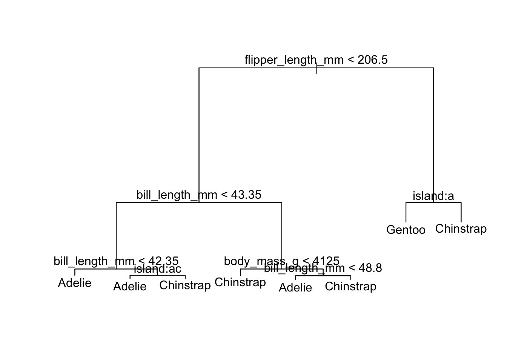
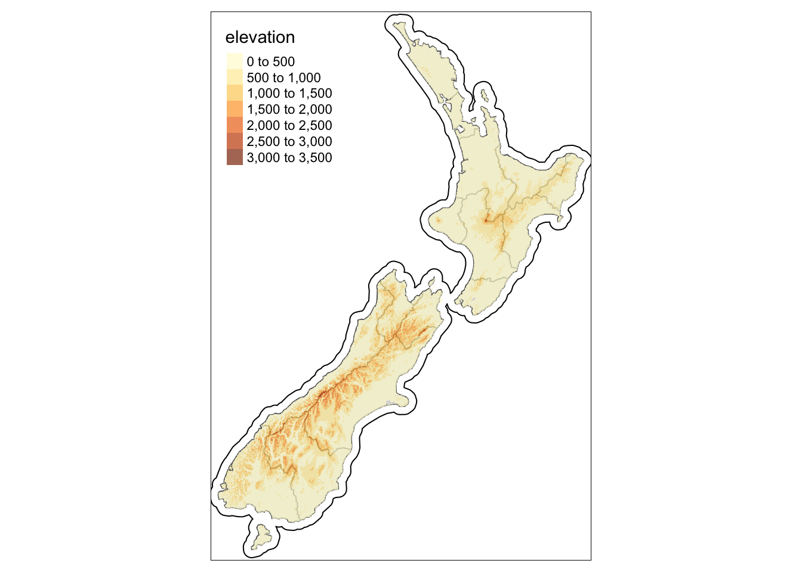

Tuesday, November 8, 2022
Today
- Statistical significance of spatial autocorrelation
- The Monte Carlo approach to inference
- Spatial autocorrelation in model residuals
As a review let us consider another data set where we start by compute spatial autocorrelation. The data are sudden infant deaths (SIDS) rates in the 100 counties of North Carolina for the period July 1, 1979 to June 30, 1984. Download and unzip the data in your working directory.
url <- "http://myweb.fsu.edu/jelsner/temp/data/sids2.zip"
download.file(url,
destfile = here::here("data", "sids2.zip"))
unzip(zipfile = here::here("data", "sids2.zip"),
exdir = here::here("data"))Then import the data with the read_sf() function from the {sf} package. Set the coordinate reference system to WGS 1984 with latitude/longitude coordinates using the ESPG code of 4326.
SIDS.sf <- sf::read_sf(dsn = here::here("data", "sids2"))
sf::st_crs(SIDS.sf) <- 4326
head(SIDS.sf)## Simple feature collection with 6 features and 18 fields
## Geometry type: MULTIPOLYGON
## Dimension: XY
## Bounding box: xmin: -81.74107 ymin: 36.07282 xmax: -75.77316 ymax: 36.58965
## Geodetic CRS: WGS 84
## # A tibble: 6 × 19
## AREA PERIMETER CNTY_ CNTY_ID NAME FIPS FIPSNO CRESS_ID BIR74 SID74 NWBIR74
## <dbl> <dbl> <dbl> <dbl> <chr> <chr> <dbl> <int> <dbl> <dbl> <dbl>
## 1 0.114 1.44 1825 1825 Ashe 37009 37009 5 1091 1 10
## 2 0.061 1.23 1827 1827 Alleg… 37005 37005 3 487 0 10
## 3 0.143 1.63 1828 1828 Surry 37171 37171 86 3188 5 208
## 4 0.07 2.97 1831 1831 Curri… 37053 37053 27 508 1 123
## 5 0.153 2.21 1832 1832 North… 37131 37131 66 1421 9 1066
## 6 0.097 1.67 1833 1833 Hertf… 37091 37091 46 1452 7 954
## # … with 8 more variables: BIR79 <dbl>, SID79 <dbl>, NWBIR79 <dbl>,
## # SIDR74 <dbl>, SIDR79 <dbl>, NWR74 <dbl>, NWR79 <dbl>,
## # geometry <MULTIPOLYGON [°]>The column SIDR79 contains the death rate per 1000 live births (1979-84) from sudden infant death syndrome. Create a choropleth map of the SIDS rates.
library(tmap)
tm_shape(SIDS.sf) +
tm_fill("SIDR79", title = "") +
tm_borders(col = "gray70") +
tm_layout(title = "SIDS Rates 1979-84 [per 1000]",
legend.outside = TRUE)
Counties with the highest rates are noted in the southern and western parts of the state. There appears to be some clustering. Counties with high rates tend to be surrounded by counties also with high rates and counties with low rates tend to be surrounded by counties also with low rates.
To quantify the amount of clustering you first create a neighborhood list (nb) and a listw object (wts). To visualize the connectivity you graph the neighborhood network.
nbs <- spdep::poly2nb(SIDS.sf)
wts <- spdep::nb2listw(nbs)
plot(nbs, sf::st_centroid(SIDS.sf)$geometry)## Warning in st_centroid.sf(SIDS.sf): st_centroid assumes attributes are constant
## over geometries of xplot(SIDS.sf$geometry, add = TRUE)
Next you compute Moran’s I with the moran() function from the {spdep} package.
m <- length(SIDS.sf$SIDR79)
s <- spdep::Szero(wts)
spdep::moran(SIDS.sf$SIDR79,
listw = wts,
n = m,
S0 = s)## $I
## [1] 0.1427504
##
## $K
## [1] 4.44434I is .14 and K is 4.4. A normal distribution has a kurtosis of 3. Values less than about 2 or greater than about 4 indicate that inferences about autocorrelation based on the assumption of normality are suspect.
Weights are specified using the style = argument in the nb2listw() function. The default “W†is row standardized (sum of the weights over all links equals the number of polygons).
“B†is binary (each neighbor gets a weight of one). “S†is a variance stabilizing scheme.
Each style gives a slightly different value for I.
x <- SIDS.sf$SIDR79
spdep::moran.test(x, spdep::nb2listw(nbs, style = "W"))$estimate[1]## Moran I statistic
## 0.1427504spdep::moran.test(x, spdep::nb2listw(nbs, style = "B"))$estimate[1] # binary## Moran I statistic
## 0.1105207spdep::moran.test(x, spdep::nb2listw(nbs, style = "S"))$estimate[1] # variance-stabilizing## Moran I statistic
## 0.1260686Thus when reporting Moran’s I you need to indicate what weighting scheme you used.
Moran’s I is the slope of a regression of the spatial lag variable onto the variable itself.
The spatial lag variable consists of the average of the neighboring values. To compute the spatial lag variable you use the lag.listw() function from the {spdep} package.
Let sids be the SIDS rate in each county then the first argument in the lab.listw() function is the listw object and the second is the vector of sids values.
sids <- SIDS.sf$SIDR79
Wsids <- spdep::lag.listw(wts,
var = sids)For each value in the vector sids there is a corresponding value in the object Wsids representing the neighborhood average SIDS rate.
Wsids[1]## [1] 2.65921j <- wts$neighbours[[1]]
j## [1] 2 18 19sum(SIDS.sf$SIDR79[j])/length(j)## [1] 2.65921The weight for county one is Wsids[1] = 2.659. The neighbor indexes for this county are in the vector wts$neighbours[[1]] of length 3. Add the SIDS rates from those counties and divide by the length.
A scatter plot of the neighborhood average SIDS rate versus the actual SIDS rate in each region.
library(ggplot2)
data.frame(sids, Wsids) |>
ggplot(mapping = aes(x = sids, y = Wsids)) +
geom_point() +
geom_smooth(method = lm) +
xlab("SIDS") + ylab("Spatial Lag of SIDS") +
theme_minimal()## `geom_smooth()` using formula 'y ~ x'
The slope of the regression line is upward indicating positive autocorrelation. The value of the slope is I. To check this type
lm(Wsids ~ sids)##
## Call:
## lm(formula = Wsids ~ sids)
##
## Coefficients:
## (Intercept) sids
## 1.7622 0.1428Statistical significance of spatial autocorrelation
Even if the county SIDS rates are randomly distributed across the state, the value of Moran’s I will not necessarily be close to zero (-1/(n-1)). If we want to use I to establish statistically significant clustering, you need a way to guard against this randomness.
Said another way: Is the value of Moran’s I significant with respect to the null hypothesis of no spatial autocorrelation?
One way to answer this question is to draw an uncertainty band on the regression line and see if a horizontal line can be placed within the band. If not, then I is statistically different than what you would expect if the null hypothesis of no spatial autocorrelation were true.
More formally the question is answered by comparing the standard deviate (\(z\) value) of the I statistic with a standard normal deviate. This is done using the moran.test() function, where the \(z\) value is the difference between I and the expected value of I divided by the square root of the variance of I.
The function takes a variable name or numeric vector and a spatial weights list object in that order. The argument randomisation = FALSE means the variance of I is computed under the assumption of normally distributed SIDS rates.
( mt <- spdep::moran.test(sids,
listw = wts,
randomisation = FALSE) )##
## Moran I test under normality
##
## data: sids
## weights: wts
##
## Moran I statistic standard deviate = 2.3438, p-value = 0.009544
## alternative hypothesis: greater
## sample estimates:
## Moran I statistic Expectation Variance
## 0.142750392 -0.010101010 0.004252954I is .143 with a variance of .0043. The \(z\) value for the I statistic is 2.3438 giving a \(p\) value slightly less than .01 under the null hypothesis of no spatial autocorrelation.
Thus we reject the null hypothesis and conclude there is weak (I is small) but significant spatial autocorrelation in SIDS rates across North Carolina at the county level.
Look at the output in the object mt with the str() function.
str(mt)## List of 6
## $ statistic : Named num 2.34
## ..- attr(*, "names")= chr "Moran I statistic standard deviate"
## $ p.value : num 0.00954
## $ estimate : Named num [1:3] 0.14275 -0.0101 0.00425
## ..- attr(*, "names")= chr [1:3] "Moran I statistic" "Expectation" "Variance"
## $ alternative: chr "greater"
## $ method : chr "Moran I test under normality"
## $ data.name : chr "sids \nweights: wts \n"
## - attr(*, "class")= chr "htest"The element called estimate is a vector of length three containing Moran’s I statistic, the expected value of Moran’s I under the assumption of uncorrelated normally distributed SIDS rates, and the variance of Moran’s I.
The \(z\) value is the difference between the statistic and it’s expected value divided by the square root of the variance.
( mt$estimate[1] - mt$estimate[2] ) / sqrt(mt$estimate[3])## Moran I statistic
## 2.343819The \(p\) value is the area under a standard normal distribution curve to the right (lower.tail = FALSE) of 2.3438 (mt$statistic).
pnorm(mt$statistic,
lower.tail = FALSE)## Moran I statistic standard deviate
## 0.009543713curve(dnorm(x), from = -4, to = 4, lwd = 2)
abline(v = mt$statistic, col = 'red')
So slightly less than 1% (\(p\) value of .0095) of the area lies to the right of the red line.
Recall the \(p\) value summarizes the evidence in support of the null hypothesis. The smaller the \(p\) value, the less evidence there is to support the null hypothesis.
In this case it is the probability that the county SIDS rates could have been arranged at random across the state. The small \(p\) value tells us that the spatial arrangement of our data is unusual with respect to the null hypothesis.
The interpretation of the \(p\) value is stated as evidence AGAINST the null hypothesis. This is because your interest lies in the null hypothesis being unsupported.
| \(p\) value | Statement of evidence against the null |
|---|---|
| less than .01 | convincing |
| .01 - .05 | moderate |
| .05 - .15 | suggestive, but inconclusive |
| greater than .15 | no |
Under the assumption of normal distributed and uncorrelated data, the expected value for Moran’s I is -1/(n-1) where n is the number of counties.
A check on the distribution of SIDS rates indicates that normality is suspect. Recall a good way to check the normality assumption is to use the sm.density() function from the {sm} package.
sm::sm.density(sids,
model = "Normal",
xlab = "SIDS Rates 1979-84 [per 1000]")
The SIDS rates are more “peaked†(higher kurtosis) than a normal distribution. In this case it is better to use the default randomisation = TRUE argument.
Further, the assumptions underlying the test are sensitive to the form of the graph of neighbor relationships and other factors so results should be checked against a test that involves permutations.
A Monte Carlo approach to inference about spatial autocorrelation
A permutation test to examine the statistical significance of spatial autocorrelation is performed with the moran.mc() function. MC stands for Monte Carlo which refers to the city of Monte Carlo in Monaco famous for its gambling casinos. The MC procedure refers to random sampling.
The name of the data vector and the weights list object (listw) are required arguments as is the number of permutations (nsim). Each permutation is a rearrangement of the SIDS rates across the counties. This rearrangement removes the spatial autocorrelation but keeps the non-spatial distribution of the SIDS rates. The neighbor topology and weights remain the same.
For each permutation (shuffle or simulation), I is computed and saved. The \(p\) value is obtained as the ratio of the number of permuted I values greater or exceeding the observed I over the number of permutation plus one. In the case where there are 5 permuted I values greater or equal to the observed value based on 99 simulations, the \(p\) value is 5/(99 + 1) = .05.
For example, if you want draw inference on your value for I using 99 simulations you type
set.seed(4102)
( mP <- spdep::moran.mc(sids,
listw = wts,
nsim = 99) )##
## Monte-Carlo simulation of Moran I
##
## data: sids
## weights: wts
## number of simulations + 1: 100
##
## statistic = 0.14275, observed rank = 96, p-value = 0.04
## alternative hypothesis: greaterYou see that only two of the 99 simulations give a Moran’s I value exceeding .1428. Thus the \(p\) value, as evidence in support of the null hypothesis, (the true value for is close to zero) is .02.
Note: here you initiate the random number generator with a seed value (4102) with the set.seed() function so that the set of random permutations of the values across the domain will be the same each time you run the simulations. This is not needed but it is important for reproducibility. The default random number generator seed value is determined from the current time (internal clock) and so no two sets of permutations will be identical.
The values of I computed for each permutation are saved in the vector mP$res.
head(mP$res)## [1] 0.072218451 0.011785265 -0.032330997 0.046546755 0.008730068
## [6] 0.080639514tail(mP$res)## [1] 0.03479774 -0.01222684 0.03392046 -0.03833658 -0.03410486 0.14275039The last value in the vector is I computed using the data in the correct counties. So the \(p\) value as evidence in support of the null hypothesis that I is close to zero is given as
sum(mP$res > mP$res[100])/99## [1] 0.04040404A density graph shows the distribution of permuted I values. To see this create 999 simulations and then plot a density curve adding a vertical line at the value of Moran’s I computed from the data at the correct counties.
mP <- spdep::moran.mc(sids,
listw = wts,
nsim = 999)
df <- data.frame(mp = mP$res[-1000])
ggplot(data = df,
mapping = aes(mp)) +
geom_density() +
geom_rug() +
geom_vline(xintercept = mP$res[1000],
color = "red", size = 2) +
theme_minimal()
Only a handful simulations give a Moran’s I value exceeding .143 (tic marks to the right of the red vertical line). The density curve is centered just to the left of zero which is consistent with the true mean being slightly less than zero (-.01).
Note that the right tail of the distribution is fatter than the left tail. This is due to the skewness of the rates used in the calculation of I.
What do you do with the knowledge that the SIDS rates have significant spatial autocorrelation? By itself not much, but it can be a warning that something is going on a larger scale (larger than the scale of the counties).
More typically the knowledge is useful after other known factors are considered in the analysis. In the language of statistics, knowledge of significant spatial autocorrelation in the residuals from a model can help you better specify the relationships defined by the model.
Spatial autocorrelation in model residuals
A spatial regression model might be needed when the residuals resulting from an aspatial (non-spatial) regression model exhibit significant spatial autocorrelation.
A common way to proceed is to regress the response variable onto the explanatory variables and check for spatial autocorrelation in the residuals.
If the residuals are spatially uncorrelated then a spatial regression model is not needed.
Let’s return to the Columbus crime data and fit a linear regression model with CRIME as the response variable and INC and HOVAL as the explanatory variables.
CC.sf <- sf::read_sf(dsn = here::here("data", "columbus"),
layer = "columbus")Start with a choropleth map displaying the crime rates across the city at the tract level.
tm_shape(CC.sf) +
tm_fill("CRIME",
title = "") +
tm_borders(col = "gray70") +
tm_layout(title = "Burglary & Vehicle Thefts\n/1000 Households",
legend.outside = TRUE)## Warning: Currect projection of shape CC.sf unknown. Long-lat (WGS84) is assumed.
Next compute Moran’s I on the CRIME variable using row-standardized weights (default option in the nb2listw() function).
nbs <- spdep::poly2nb(CC.sf)
wts <- spdep::nb2listw(nbs)
spdep::moran(CC.sf$CRIME,
listw = wts,
n = length(nbs),
S0 = spdep::Szero(wts))## $I
## [1] 0.5001886
##
## $K
## [1] 2.225946Is the spatial autocorrelation you detect due to a clustering of income and housing values across the city? Said another way, after accounting for income and housing values, do crime rates still cluster?
This is answered by fitting a regression model to the crime rates with income and housing values as explanatory variables.
model.lm <- lm(CRIME ~ INC + HOVAL,
data = CC.sf)
summary(model.lm)##
## Call:
## lm(formula = CRIME ~ INC + HOVAL, data = CC.sf)
##
## Residuals:
## Min 1Q Median 3Q Max
## -34.418 -6.388 -1.580 9.052 28.649
##
## Coefficients:
## Estimate Std. Error t value Pr(>|t|)
## (Intercept) 68.6190 4.7355 14.490 < 2e-16 ***
## INC -1.5973 0.3341 -4.780 1.83e-05 ***
## HOVAL -0.2739 0.1032 -2.654 0.0109 *
## ---
## Signif. codes: 0 '***' 0.001 '**' 0.01 '*' 0.05 '.' 0.1 ' ' 1
##
## Residual standard error: 11.43 on 46 degrees of freedom
## Multiple R-squared: 0.5524, Adjusted R-squared: 0.5329
## F-statistic: 28.39 on 2 and 46 DF, p-value: 9.341e-09Income and housing values vary indirectly with values of crime. Higher income tracts and tracts with higher housing values have less crime. The model statistically explains 55% of the variation in crime.
You use the residuals() method to extract the vector of residuals from the model.
res <- residuals(model.lm)There are 49 residuals, one residual for every tract. A residual is defined as the difference between the observed value and the model predicted value. A tract with a residual that is greater than zero indicates that there is more crime than the model predicts for that location.
You next check on the distribution of the residuals relative to a normal distribution.
sm::sm.density(res,
model = "Normal")
Since the black lines falls completely within the blue envelope (defined by a normal distribution) you find no evidence to reject the assumption of normally distributed model residuals.
Next you plot a choropleth map of the model residuals. Are there clusters of high and low residuals? First add the vector of residuals as a column in the simple feature data frame. Call this new column residuals then use functions from the {tmap} package.
CC.sf$residuals <- res
tm_shape(CC.sf) +
tm_fill("residuals") +
tm_borders(col = "gray70") +
tm_layout(title = "Regression Residuals")## Warning: Currect projection of shape CC.sf unknown. Long-lat (WGS84) is assumed.## Variable(s) "residuals" contains positive and negative values, so midpoint is set to 0. Set midpoint = NA to show the full spectrum of the color palette.
There appears to be distinct regions where the model over predicts crime (yellow to green tracts) conditional on household income and housing values and where it under predicts crime (yellow to red tracts).
The amount of clustering appears to be is less than the crime rates themselves. That is, after accounting for regional factors related to crime the spatial autocorrelation is reduced.
To determine how much less clustering you compute I on the residuals with the lm.morantest() function. You need to include the model object and the spatial weights object.
spdep::lm.morantest(model = model.lm,
listw = wts)##
## Global Moran I for regression residuals
##
## data:
## model: lm(formula = CRIME ~ INC + HOVAL, data = CC.sf)
## weights: wts
##
## Moran I statistic standard deviate = 2.8393, p-value = 0.00226
## alternative hypothesis: greater
## sample estimates:
## Observed Moran I Expectation Variance
## 0.222109407 -0.033418335 0.008099305Moran’s I on the model residuals is .222. This compares with the value of .5 on crime alone. Part of the spatial autocorrelation is absorbed by the explanatory factors.
The output gives a \(p\) value on I of .002, thus you reject the null hypothesis of no spatial autocorrelation in the residuals and conclude that a spatial regression model would improve the model.
The \(z\)-value takes into account the fact that these are residuals so the variance is adjusted accordingly.
The next step is to choose the type of spatial regression model. Before that, let’s look at one more example.
Example: Percentage of folks identifying as white in Mississippi counties
Download the county-level police data. Import the data as a simple feature data frame and assign the geometry a geographic CRS. The file police.zip contains shapefiles in a folder on my website.
url <- "http://myweb.fsu.edu/jelsner/temp/data/police.zip"
download.file(url,
destfile = here::here("data", "police.zip"))
unzip(zipfile = here::here("data", "police.zip"),
exdir = here::here("data"))
PE.sf <- sf::read_sf(dsn = here::here("data", "police"),
layer = "police")
sf::st_crs(PE.sf) <- 4326
names(PE.sf)## [1] "AREA" "PERIMETER" "CNTY_" "CNTY_ID" "NAME"
## [6] "STATE_NAME" "STATE_FIPS" "CNTY_FIPS" "FIPS" "FIPSNO"
## [11] "POLICE" "POP" "TAX" "TRANSFER" "INC"
## [16] "CRIME" "UNEMP" "OWN" "COLLEGE" "WHITE"
## [21] "COMMUTE" "geometry"Variables include police expenditures (POLICE), crime (CRIME), income (INC), unemployment (UNEMP) and other socio-economic characteristics across Mississippi at the county level. The police expenditures are per capita 1982 (dollars per person). The personal income per county resident, 1982 (dollars per person). The crime is the number of serious crimes per 100,000 residents, 1981. Unemployment is percent unemployed in 1980.
The geometries are polygons defining the county borders.
plot(PE.sf$geometry)
Again, you need to assign the neighborhoods and the associated weights between the each region and each neighbor of that region.
nbs <- spdep::poly2nb(PE.sf)
wts <- spdep::nb2listw(nbs)Another way to do this is to specify the number of neighbors and define who the neighbors are based on distance. You do this with the knearneigh() function. First extract the coordinates of the polygon centroids.
coords <- PE.sf |>
sf::st_geometry() |>
sf::st_centroid() |>
sf::st_coordinates()
head(coords)## X Y
## 1 -88.56938 34.88746
## 2 -88.23073 34.74665
## 3 -88.89928 34.77600
## 4 -89.17942 34.82323
## 5 -89.98973 34.88099
## 6 -89.49699 34.76984You can specify that each county for example has six neighbors where the neighbors are based on proximity. Since the CRS is geographic we include the longlat = TRUE argument so the distances are based on great circles.
knn <- spdep::knearneigh(coords,
k = 6,
longlat = TRUE)
head(knn$nn)## [,1] [,2] [,3] [,4] [,5] [,6]
## [1,] 9 3 2 4 10 14
## [2,] 9 1 16 3 14 10
## [3,] 4 10 1 9 6 14
## [4,] 3 6 10 1 11 9
## [5,] 8 7 6 12 11 4
## [6,] 4 8 11 5 3 10The output is a list of five elements with the first being a matrix of dimension number of counties by the number of neighbors. You see here that the neighborhoods are non-symmetric. County 3 is a neighbor of county 2, but county 2 is not a neighbor of county 3. This is important since some spatial regression models require symmetric neighborhood definitions.
You turn this list into a neighborhood object (class nb) with the knn2nb() function.
nbs2 <- spdep::knn2nb(knn)
summary(nbs2)## Neighbour list object:
## Number of regions: 82
## Number of nonzero links: 492
## Percentage nonzero weights: 7.317073
## Average number of links: 6
## Non-symmetric neighbours list
## Link number distribution:
##
## 6
## 82
## 82 least connected regions:
## 1 2 3 4 5 6 7 8 9 10 11 12 13 14 15 16 17 18 19 20 21 22 23 24 25 26 27 28 29 30 31 32 33 34 35 36 37 38 39 40 41 42 43 44 45 46 47 48 49 50 51 52 53 54 55 56 57 58 59 60 61 62 63 64 65 66 67 68 69 70 71 72 73 74 75 76 77 78 79 80 81 82 with 6 links
## 82 most connected regions:
## 1 2 3 4 5 6 7 8 9 10 11 12 13 14 15 16 17 18 19 20 21 22 23 24 25 26 27 28 29 30 31 32 33 34 35 36 37 38 39 40 41 42 43 44 45 46 47 48 49 50 51 52 53 54 55 56 57 58 59 60 61 62 63 64 65 66 67 68 69 70 71 72 73 74 75 76 77 78 79 80 81 82 with 6 linksThe argument sym = TRUE forces the output neighbors list to be symmetric. Create another neighborhood object.
nbs3 <- spdep::knn2nb(knn,
sym = TRUE)
summary(nbs3)## Neighbour list object:
## Number of regions: 82
## Number of nonzero links: 568
## Percentage nonzero weights: 8.447353
## Average number of links: 6.926829
## Link number distribution:
##
## 6 7 8 9 10
## 37 25 13 3 4
## 37 least connected regions:
## 1 2 5 6 7 8 13 16 18 21 22 28 31 33 34 40 42 44 45 46 48 49 50 54 57 59 62 63 65 73 74 76 77 78 80 81 82 with 6 links
## 4 most connected regions:
## 10 19 66 70 with 10 linksCompare the neighborhood topologies.
par(mfrow = c(1, 2))
plot(sf::st_geometry(PE.sf), border = "grey")
plot(nbs, coords, add = TRUE)
plot(sf::st_geometry(PE.sf), border = "grey")
plot(nbs2, coords, add = TRUE)Create weight matrices for these alternative neighborhood definitions using the same nb2listw() function.
wts2 <- spdep::nb2listw(nbs2)
wts3 <- spdep::nb2listw(nbs3)You then compute Moran I for the variable percentage white (WHITE) with the moran() function. And you do it separately for the three different weight matrices.
spdep::moran(PE.sf$WHITE,
listw = wts,
n = length(nbs),
S0 = spdep::Szero(wts))## $I
## [1] 0.5634778
##
## $K
## [1] 2.300738spdep::moran(PE.sf$WHITE,
listw = wts2,
n = length(nbs2),
S0 = spdep::Szero(wts2))## $I
## [1] 0.5506132
##
## $K
## [1] 2.300738spdep::moran(PE.sf$WHITE,
listw = wts3,
n = length(nbs3),
S0 = spdep::Szero(wts3))## $I
## [1] 0.5592557
##
## $K
## [1] 2.300738Values of Moran I are constrained between -1 and +1. In this case the neighborhood definition has little impact on inferences made about spatial autocorrelation. The kurtosis is between 2 and 4 consistent with a set of values from a normal distribution.
In a similar way you compute Geary’s c statistic.
spdep::geary(PE.sf$WHITE,
listw = wts,
n = length(nbs),
S0 = spdep::Szero(wts),
n1 = length(nbs) - 1)## $C
## [1] 0.4123818
##
## $K
## [1] 2.300738Values of Geary’s c are between 0 and 2 with values less than one indicating positive autocorrelation. If the interpretation on the amount of spatial autocorrelation based on Geary’s c is different than the interpretation on the amount of autocorrelation based on Moran I then it is a good idea to examine local variations in autocorrelation.
Finally, recall that to create a Moran scatter plot. You first assign to white the percentage of whites in each county (variable WHITE) and to Wwhite the spatial lagged value of percentage of whites. You then use ggplot() as follows.
white <- PE.sf$WHITE
Wwhite <- spdep::lag.listw(wts,
white)
library(ggplot2)
data.frame(white, Wwhite) |>
ggplot(mapping = aes(x = white, y = Wwhite)) +
geom_point() +
geom_smooth(method = lm) +
scale_x_continuous(limits = c(0, 100)) +
scale_y_continuous(limits = c(0, 100)) +
xlab("% White") + ylab("Avg of % White in the Neighborhood\n(Spatial Lag)") +
theme_minimal()## `geom_smooth()` using formula 'y ~ x'
The line is the best-fit linear regression of Wwhite onto white and it’s slope is equal to the value of Moran I. This is true regardless of the neighborhood definition.
lm(Wwhite ~ white)##
## Call:
## lm(formula = Wwhite ~ white)
##
## Coefficients:
## (Intercept) white
## 27.2333 0.5635You test for significant spatial autocorrelation with the moran.test() function.
spdep::moran.test(white,
listw = wts)##
## Moran I test under randomisation
##
## data: white
## weights: wts
##
## Moran I statistic standard deviate = 8.5089, p-value < 2.2e-16
## alternative hypothesis: greater
## sample estimates:
## Moran I statistic Expectation Variance
## 0.563477779 -0.012345679 0.004579648You see that the value of .56 is much larger than the expected value under the null hypothesis of no autocorrelation (-.012 = -1/(n-1)).